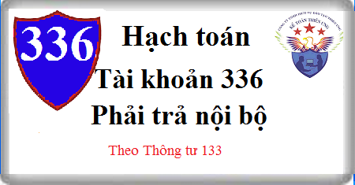

Hướng dẫn cách hạch toán Tài khoản 336 theo thông tư 133, cách hạch toán chi nhánh phụ thuộc, khi nhận vốn cấp, hàng hóa, sản phẩm,TSCĐ từ Công ty cấp trên, hạch toán phải trả nội bộ …
1. Nguyên tắc kế toán Tài khoản 336 - Phải trả nội bộ
a) Tài khoản này dùng để phản ánh tình hình thanh toán các khoản phải trả giữa doanh nghiệp (đơn vị cấp trên) với các đơn vị trực thuộc hạch toán phụ thuộc có tổ chức công tác kế toán (đơn vị cấp dưới); Giữa các đơn vị hạch toán phụ thuộc của cùng một doanh nghiệp với nhau.
- Trong doanh nghiệp, việc phân loại các đơn vị cấp dưới trực thuộc cho mục đích kế toán được căn cứ vào bản chất của đơn vị (hạch toán độc lập hay hạch toán phụ thuộc, có tư cách pháp nhân hay không, có người đại diện trước pháp luật hay không) mà không phụ thuộc vào tên gọi của đơn vị đó (chi nhánh, xí nghiệp, tổ, đội...).
b) Các khoản phải trả nội bộ phản ánh trên tài khoản 336 "Phải trả nội bộ" bao gồm khoản phải trả về vốn kinh doanh và các khoản đơn vị hạch toán phụ thuộc phải nộp doanh nghiệp, phải trả đơn vị hạch toán phụ thuộc khác; Các khoản doanh nghiệp phải cấp cho đơn vị hạch toán phụ thuộc. Các khoản phải trả, phải nộp có thể là quan hệ nhận tài sản, vốn, thanh toán vãng lai, chi hộ trả hộ, ...;
c) Tùy theo việc phân cấp quản lý và đặc điểm hoạt động, doanh nghiệp quyết định đơn vị hạch toán phụ thuộc ghi nhận khoản vốn kinh doanh được doanh nghiệp cấp vào TK 3361 - Phải trả nội bộ về vốn kinh doanh hoặc TK 411 Vốn đầu tư của chủ sở hữu
d) Tài khoản 336 "Phải trả nội bộ" được hạch toán chi tiết cho từng đơn vị nội bộ có quan hệ thanh toán, trong đó được theo dõi theo từng khoản phải nộp, phải trả.
đ) Cuối kỳ, kế toán tiến hành kiểm tra, đối chiếu tài khoản 136, tài khoản 336 giữa các đơn vị nội bộ theo từng nội dung thanh toán để lập biên bản thanh toán bù trừ với từng đơn vị làm căn cứ hạch toán bù trừ trên 2 tài khoản này. Khi đối chiếu, nếu có chênh lệch, phải tìm nguyên nhân và điều chỉnh kịp thời.
2. Kết cấu và nội dung Tài khoản 336 - Phải trả nội bộ
Bên Nợ:
- Số tiền đã trả cho đơn vị hạch toán phụ thuộc;
- Số tiền đơn vị hạch toán phụ thuộc đã nộp doanh nghiệp;
- Số tiền đã trả các khoản mà các đơn vị nội bộ chi hộ, hoặc thu hộ đơn vị nội bộ;
- Bù trừ các khoản phải thu với các khoản phải trả của cùng một đơn vị có quan hệ thanh toán.
Bên Có:
- Số vốn kinh doanh của đơn vị hạch toán phụ thuộc được doanh nghiệp cấp;
- Số tiền đơn vị hạch toán phụ thuộc phải nộp doanh nghiệp;
- Số tiền phải trả cho đơn vị hạch toán phụ thuộc;
- Số tiền phải trả cho các đơn vị khác trong nội bộ về các khoản đã được đơn vị khác chi hộ và các khoản thu hộ đơn vị khác.
Số dư bên Có: Số tiền còn phải trả, phải nộp cho doanh nghiệp và các đơn vị trong nội bộ doanh nghiệp.
Tài khoản 336 - Phải trả nội bộ, có 2 tài khoản cấp 2:
- Tài khoản 3361 - Phải trả nội bộ về vốn kinh doanh: Tài khoản này chỉ mở ở đơn vị cấp dưới hạch toán phụ thuộc để phản ánh số vốn kinh doanh được đơn vị cấp trên giao.
- Tài khoản 3368 - Phải trả nội bộ khác: Phản ánh tất cả các khoản phải trả khác giữa các đơn vị nội bộ trong cùng một doanh nghiệp.
3. Cách hạch toán Phải trả nội bộ Tài khoản 336
3.1. Tại đơn vị hạch toán phụ thuộc (đơn vị cấp dưới)
a) Khi đơn vị hạch toán phụ thuộc như chi nhánh, cửa hàng… nhận vốn được cấp bởi doanh nghiệp, đơn vị cấp trên, ghi:
Nợ các Tài khoản 111, 112, 152, 155, 156, 211, 217.....
Có TK 336 - Phải trả nội bộ (3361).
b) Số tiền phải trả cho các đơn vị nội bộ khác về các khoản đã được chi hộ, trả hộ, hoặc khi nhận sản phẩm, hàng hóa, dịch vụ từ các đơn vị nội bộ chuyển đến, ghi:
Nợ các TK 152, 153, 156...
Nợ TK 331 Phải trả cho người bán
Nợ TK 642 - Chi phí quản lý kinh doanh
Nợ TK 133 - Thuế GTGT dược khấu trừ
Có TK 336 - Phải trả nội bộ.
c) Khi thu tiền hộ hoặc vay các đơn vị nội bộ khác, ghi:
Nợ các TK 111,112,...
Có TK 336 - Phải trả nội bộ.
d) Khi trả tiền cho doanh nghiệp và các đơn vị nội bộ về các khoản phải trả, phải nộp, chi hộ, thu hộ, ghi:
Nợ TK 336 - Phải trả nội bộ
Có các TK 111,112,...
đ) Khi có quyết định điều chuyển tài sản cho các đơn vị khác trong nội bộ và có quyết định giảm vốn kinh doanh ở đơn vị hạch toán phụ thuộc, ghi:
Nợ TK 336 - Phải trả nội bộ (3361)
Nợ TK 214 Hao mòn TSCĐ (nếu điều chuyển TSCĐ, BĐSĐT)
Có các TK 152, 155, 156, 211, 217.....
e) Bù trừ giữa các khoản phải thu và phải trả phát sinh từ giao dịch với các đơn vị nội bộ, ghi:
Nợ TK 336 - Phải trả nội bộ
Có TK 136 Phải thu nội bộ.
g) Trường hợp đơn vị hạch toán phụ thuộc không được phân cấp kế toán đến lợi nhuận sau thuế chưa phân phối (TK 421), định kỳ đơn vị hạch toán phụ thuộc kết chuyển các khoản doanh thu, thu nhập, chi phí trực tiếp qua TK 336 – Phải trả nội bộ hoặc qua TK 911 – Xác định kết quả kinh doanh, ghi:
- Kết chuyển doanh thu, thu nhập, ghi:
Nợ các Tài khoản 511, 515, 711
Có TK 911 - Xác định kết quả kinh doanh (nếu đơn vị hạch toán phụ thuộc theo dõi kết quả kinh doanh không theo dõi kết quả kinh doanh)
- Kết chuyển các khoản chi phí, ghi:
Nợ TK 336 - Phải trả nội bộ (nếu đơn vị hạch toán phụ thuộc không được phân cấp theo dõi kết quả kinh doanh)
Nợ TK 911 - Xác định kết quả kinh doanh (nếu đơn vị hạch toán trong kỳ)
Có TK 336 - Phải trả nội bộ (nếu đơn vị hạch toán phụ thuộc được phân cấp theo dõi kết quả kinh doanh riêng)
Có các Tài khoản 632, 635, 642, 811
- Định kỳ, đơn vị hạch toán phụ thuộc được phân cấp theo dõi kết quả kinh doanh trong kỳ kết chuyển kết quả kinh doanh (lãi hoặc lỗ) chuyển lên đơn vị cấp trên, ghi:
+ Kết chuyển lãi:
Nợ TK 911 – Xác định kết quả kinh doanh.
Có TK 336 – Phải trả nội bộ.
+ Kết chuyển lỗ:
Nợ TK 336 - Phải trả nội bộ
Có TK 911 - Xác định kết quả kinh doanh.
h) Trường hợp được phân cấp hạch toán đến lợi nhuận sau thuế chưa phân phối, định kỳ đơn vị hạch toán phụ thuộc kết chuyển lợi nhuận sau thuế chưa phân phối cho đơn vị cấp trên, ghi:
- Kết chuyển lãi, ghi:
Nợ TK 421- Lợi nhuận sau thuế chưa phân phối
Có TK 336 - Phải trả nội bộ.
- Kết chuyển lỗ, ghi:
Nợ TK 336 - Phải trả nội bộ
Có TK 421 - Lợi nhuận sau thuế chưa phân phối.
3.2. Hạch toán tại doanh nghiệp có đơn vị hạch toán phụ thuộc (đơn vị cấp trên)
a) Số quỹ khen thưởng, quỹ phúc lợi phải cấp cho các đơn vị hạch toán phụ thuộc, ghi:
Nợ TK 353 Quỹ khen thưởng, phúc lợi
Có TK 336 - Phải trả nội bộ.
b) Các khoản phải trả cho các đơn vị hạch toán phụ thuộc, ghi:
Nợ TK 152 Nguyên liệu vật liệu
Nợ TK 153 Công cụ dụng cụ
Nợ TK 211 Tài sản cố định
Nợ TK 331 - Phải trả cho người bán
Nợ TK 642 - Chi phí quản lý kinh doanh
Có TK 336 - Phải trả nội bộ.
c) Khi thanh toán các khoản phải trả cho các đơn vị hạch toán phụ thuộc, ghi:
Nợ TK 336 - Phải trả nội bộ
Có các TK 111, 112, ...
d) Bù trừ các khoản phải thu, phải trả nội bộ, ghi:
Nợ TK 336 - Phải trả nội bộ
Có TK 136 - Phải thu nội bộ.
